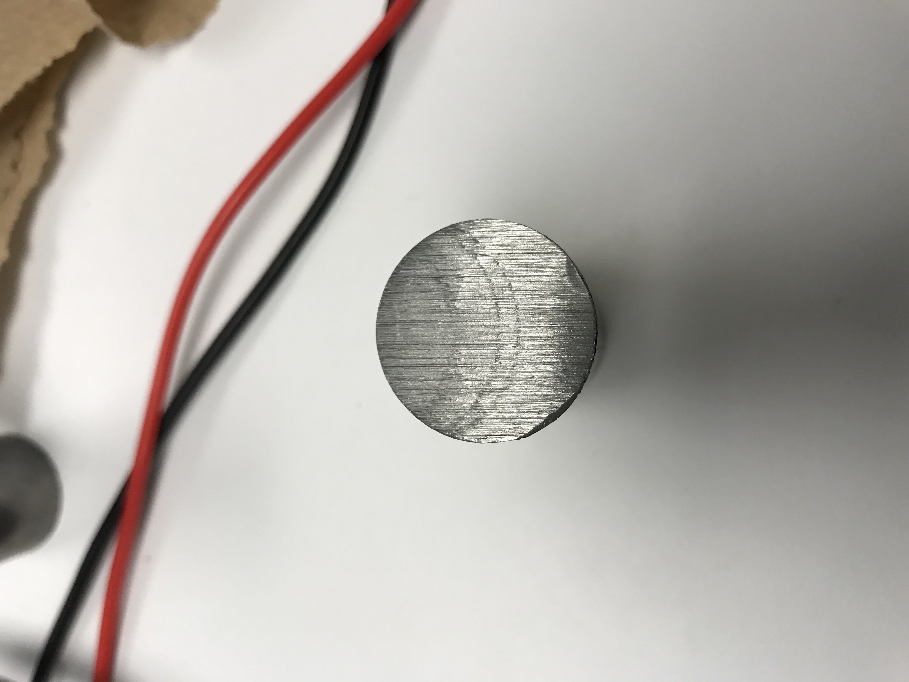

Photos and Videos


The Motion Shield, created by sculptor Barry Hunnicutt was a gift to Harvey Mudd from Dr. and Mrs. R.K Linde many years ago. It was shipped in pieces and never assembled until the pieces were found in storage in the winter of 1980. This particular work was part of a series of eight smaller pieces that reflected the artist’s interest in Aztec hieroglyphs and pre-Columbian architecture. This sculpture is made of high-strength, low-alloy Cor-Ten steel dubbed as an “unrustable” metal sculpture to help reinforce the appearance of strength to Hunnicutt’s work.
Given Harvey Mudd’s prank culture, it should be no surprise that some students took this as a challenge to rust the “unrustable” sculpture. They accomplished this by covering the sculpture in ketchup, the electrolyte in this case, and running current through it, rusting the work. And it’s actually because of this incident that Mudd’s pranking policy now requires that all pranks must be reversible within 24 hours.
Rust is the common term for iron oxide, a chemical compound that is associated with many irons and other types of metals and steels during the process of corrosion. This process consists of the following:
The most common cases of rust occur along metal structures left outside where the iron steel is readily in contact with water and carbon dioxide in the environment, all of which combine to form carbonic acid, a great electrolyte, that oxidizes the iron into hydrogen and carbon. The free oxygen and iron combine to form iron oxide, which is what we recognize as rust.
This high-strength, low-alloy steel, sometimes referred to as weathering steel, is a type of alloy steel known for being less likely to corrode than typical carbon steels. With it’s unique and naturally oxidized finish, COR-TEN steel resists corrosion due to weather and pollutants by forming a coating of dark brown oxidation over the metal, keeping further penetration of rust throughout the rest of the material.
Learn MoreIn this day and age, with global warming and increasing atmospheric pollutants becoming more prevalent, it’s worth exploring how COR-TEN steel performs under highly polluted conditions. It’s manufacturer doesn’t recommend COR-TEN steel in extremely polluted situations, such as sulfur dioxide present in more than 200 mg/m2/day or other similarly extreme amounts of industrial fumes and chemicals.
Learn MoreFor our experiment we used ketchup and electric current to rust AISI 4340 Alloy steel in the same manner that the students rusted the COR-TEN steel of the statue. Alloy steels like COR-TEN and AISI 4340 are classified by having composition exceeding the limitations of B, C, Mn, Mo, Ni, Si, Cr, and Va set for carbon steels. We chose AISI 4340 for our experiment because it is a low-cost alternative to COR-TEN.
Learn MoreBoth have similar chemical compositions with the exception of AISI 4340 containing significantly more Nickel and Molybdenum, and both have similar physical properties. We made sure to choose a low alloy steel for our experiment because low alloy steel has a greater resistance to corrosion than carbon steel.
Learn MoreOur team set out to test the process and obtained AISI 4340 steel samples and ketchup from two fine dining establishments, In-N-Out and the Hub at Claremont McKenna College. As shown in the pictures, we conducted electricity through the ketchup atop the surface of the steel, using an LED diode to visually indicate when electricity was being run through the condiment with our 15 volt power supply. As we can see from the “after” photos, there are two dark spots where we see the effects of running electricity through our ketchup. The steel used, as explained earlier, has different qualities and properties than that of COR-TEN steel, and our power supply was likely much smaller than what was presumably used on the Motion Shield sculpture, so the effects of our experiment are just the initial stages of rust. More time and a more acidic environment would likely yield a much more aggressive stage of rust as those typically seen on roadside infrastructures and outdoor sculptures.